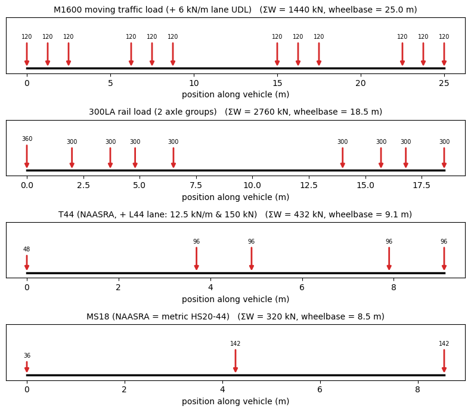
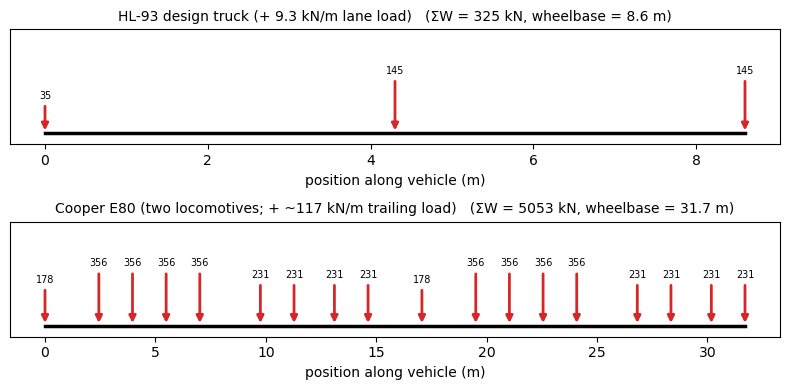
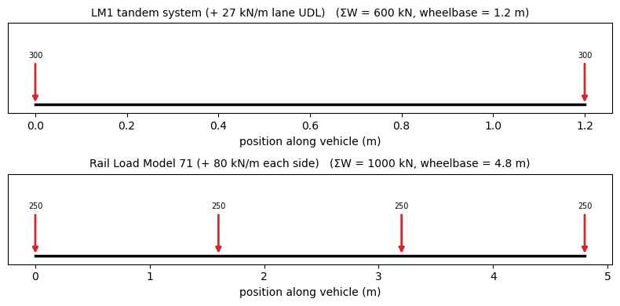
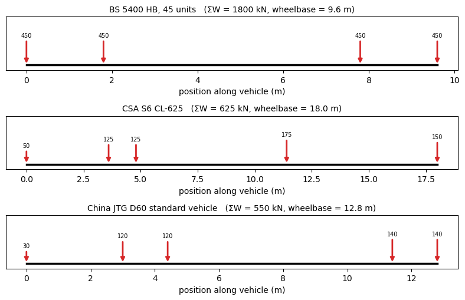
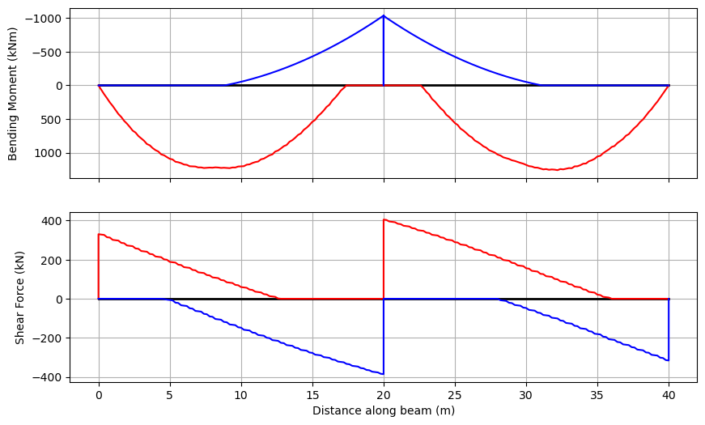

The Vehicle Library#
VehicleLibrary is a repository of standard bridge design vehicles, grouped by region. Each getter returns a Vehicle (a set of axle point loads) ready for a BridgeAnalysis:
cba.VehicleLibrary.AU.get_m1600(6.25) # AS 5100.2 road
cba.VehicleLibrary.US.get_hl93_truck() # AASHTO LRFD
cba.VehicleLibrary.EU.get_lm71() # Eurocode rail
The regions are AU (AS 5100.2 / NAASRA), US (AASHTO / AREA Cooper), EU (Eurocode EN 1991-2), UK (BS 5400 / CS 454), CA (CSA S6) and CN (JTG D60).
Where a code pairs the vehicle with a lane (distributed) load, that intensity is noted in the getter’s docstring and applied through BridgeAnalysis.run_load_model(..., w_lane=) (see the last section).
[1]:
import numpy as np
import matplotlib.pyplot as plt
import pycba as cba
VL = cba.VehicleLibrary
def show_vehicle(veh, title, ax=None):
"""Draw a vehicle's axles as scaled load arrows along its wheelbase."""
if ax is None:
_, ax = plt.subplots(figsize=(8, 1.7))
x = np.atleast_1d(veh.axle_coords)
wmax = veh.axw.max()
for xi, wi in zip(x, veh.axw):
h = 0.4 + 0.6 * wi / wmax
ax.annotate("", xy=(xi, 0), xytext=(xi, h),
arrowprops=dict(arrowstyle="-|>", color="tab:red", lw=2))
ax.text(xi, h + 0.05, f"{wi:.0f}", ha="center", va="bottom", fontsize=7)
ax.plot([x.min(), max(x.max(), x.min() + 0.1)], [0, 0], "k", lw=2.5)
ax.set_title(f"{title} (ΣW = {veh.W:.0f} kN, wheelbase = {veh.L:.1f} m)", fontsize=10)
ax.set_ylim(-0.2, 1.9)
ax.set_yticks([])
ax.set_xlabel("position along vehicle (m)")
return ax
Australia — AS 5100.2 and the historical NAASRA models#
VL.AU carries the current AS 5100.2 models (M1600, S1600, A160, W80, 300LA / LA rail) and the historical NAASRA road trucks (T44, MS18), plus the ABAG assessment vehicles.
[2]:
fig, axs = plt.subplots(4, 1, figsize=(8, 7))
show_vehicle(VL.AU.get_m1600(6.25), "M1600 moving traffic load (+ 6 kN/m lane UDL)", axs[0])
show_vehicle(VL.AU.get_300la(axle_group_count=2), "300LA rail load (2 axle groups)", axs[1])
show_vehicle(VL.AU.get_t44(), "T44 (NAASRA, + L44 lane: 12.5 kN/m & 150 kN)", axs[2])
show_vehicle(VL.AU.get_ms18(), "MS18 (NAASRA = metric HS20-44)", axs[3])
fig.tight_layout()

United States — AASHTO LRFD and the AREA Cooper rail series#
VL.US carries the HL-93 design truck and tandem, and the Cooper E-series rail load (two locomotives, scaled by the E-number).
[3]:
fig, axs = plt.subplots(2, 1, figsize=(8, 4))
show_vehicle(VL.US.get_hl93_truck(), "HL-93 design truck (+ 9.3 kN/m lane load)", axs[0])
show_vehicle(VL.US.get_cooper(80), "Cooper E80 (two locomotives; + ~117 kN/m trailing load)", axs[1])
fig.tight_layout()

Europe — Eurocode EN 1991-2#
VL.EU carries the Load Model 1 tandem system (road) and rail Load Model 71.
[4]:
fig, axs = plt.subplots(2, 1, figsize=(8, 4))
show_vehicle(VL.EU.get_lm1(), "LM1 tandem system (+ 27 kN/m lane UDL)", axs[0])
show_vehicle(VL.EU.get_lm71(), "Rail Load Model 71 (+ 80 kN/m each side)", axs[1])
fig.tight_layout()

UK, Canada and China#
VL.UK (BS 5400 / CS 454 HB), VL.CA (CSA S6 CL-625) and VL.CN (JTG D60 standard vehicle).
[5]:
fig, axs = plt.subplots(3, 1, figsize=(8, 5.2))
show_vehicle(VL.UK.get_hb(units=45), "BS 5400 HB, 45 units", axs[0])
show_vehicle(VL.CA.get_cl625(), "CSA S6 CL-625", axs[1])
show_vehicle(VL.CN.get_jtg_vehicle(), "China JTG D60 standard vehicle", axs[2])
fig.tight_layout()

Using a model in an analysis#
Pass a vehicle to BridgeAnalysis. For a code model that pairs the truck with a lane load, use run_load_model(step, w_lane=...) — here the HL-93 truck with its 9.3 kN/m design lane load over a two-span continuous bridge, enveloped over the traverse.
[6]:
ba = cba.BeamAnalysis([20.0, 20.0], 1.0e7, [-1, 0, -1, 0, -1, 0]) # EI in kN.m^2
bridge = cba.BridgeAnalysis(ba, VL.US.get_hl93_truck())
env = bridge.run_load_model(step=0.5, w_lane=9.3) # HL-93 truck + design lane load
env.plot()
print(f"max sagging moment = {env.Mmax.max():8.1f} kN.m")
print(f"max hogging moment = {env.Mmin.min():8.1f} kN.m")
max sagging moment = 1259.0 kN.m
max hogging moment = -1036.5 kN.m

Companion lane loads (summary)#
Several models are defined as a vehicle plus an accompanying lane/distributed load; pass it as run_load_model(..., w_lane=):
Model |
|
Note |
|---|---|---|
|
6 |
continuous under the truck |
|
24 |
stationary load |
|
12.5 |
L44, also a 150 kN concentrated load |
|
9.3 |
design lane load |
|
≈ 1.46·E |
trailing uniform load |
|
27 |
Lane 1 UDL (9 kN/m² × 3 m) |
|
80 |
each side, beyond the axles |
|
9 |
with 80%-reduced axles |
For models with a variable axle spacing (get_hl93_truck, get_t44, get_ms18, get_hb, get_m1600/get_s1600), pass the spacing that produces the worst effect.